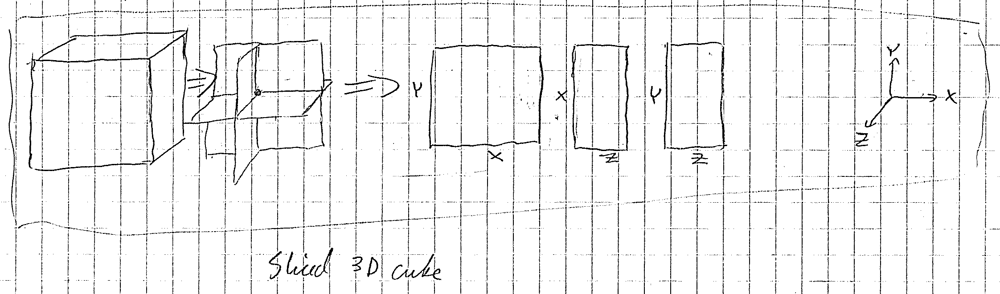
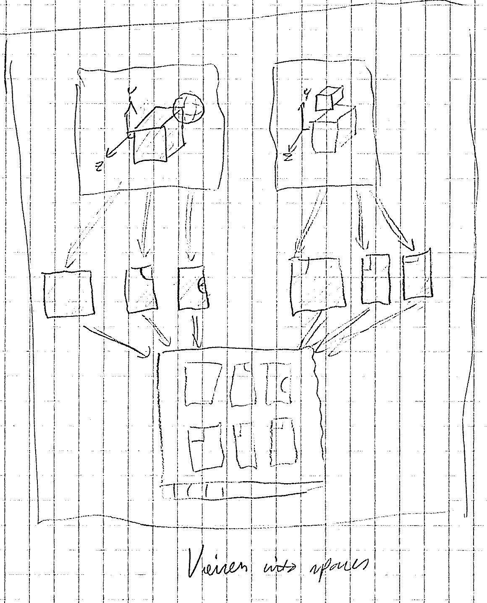
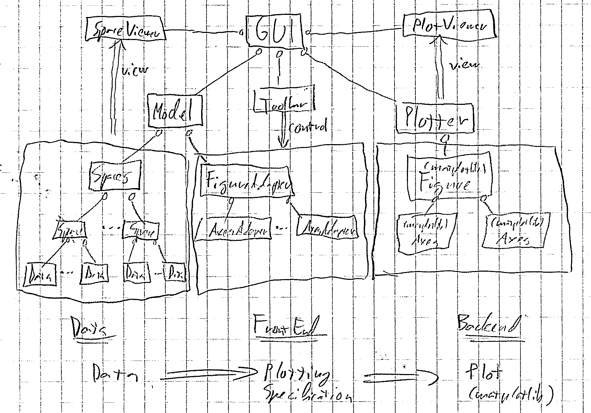

Right now the program has all the functionality, but the edges are so rough that it is not yet usable for the user. Example problems:
All of these problems will be rectified. In the meantime, you can use this to convert a dicom into a numpy array:
import numpy
import dwi.dwimage
dwimage = dwi.dwimage.load_dicom('path_to_file')
numpy.save('dicomfile1.npy', data = dwimage.image)
These tasks are quite simple, they shouldn’t take long to implement.
The SuperKluge is a multidimensional array viewer. It can be used to visualize multidimensional images, such as those used in medical imaging . An example image of this type is a DICOM file which consists of voxels and b-values. These define a 4D array with indices Z, Y, X, B containing floating point values. The SuperKluge can visualize this by taking slices, i.e. displaying different 2D projections of the array.
SuperKluge is a work in progress research prototype. The goal is to use matplotlib and numpy to create a version of the matplotlib’s default viewer for multidimensional images. The displayed data is an arbitrary numpy array, or a superimposed collection of arrays. This means that the platform can be extended to perform many kinds of operations and machine learning tasks external to the viewer.
The viewer should strive for codebase simplicity and extensibility. It should be possible to add tools and functions without changing the underlying architecture. Minimal assumptions such as in matplotlib’s viewer imply greater extensibility.
The program consists of a collection of discretized R^D hyperspaces with values assigned to each block. We assume that the discretization process uses homogenous distances, so that the space is a multidimensional grid. The grid block may be a hyperractangle, not necessarily a hypercube, but the block sizes must be consistent.
Note
This interpretation has a subtle problem, it assumes nearest neighbor interpolation.... In reality we should be manipulating points in the real space, and only interpolate at the upmost level of plotting this space.
Each hyperspace can contain one or more arrays, which define the value at each grid point. If two arrays occupy the same grid, the array order defines which is superimposed. The hyperspace can also contain abstract mathematical primitives such as hyperrectangles or hyperellipses, which are used to choose a set of grid items that belong to the space inside their boundary.
A simple example is a 3D cube grid with each pixel colored according to the value. The program can take slices of this object to three direcions : X, Y or Z. We must specify which slice to take in the given direction, and we then get a colored 2D array.
These 2D projections are called views in the program. In a D- dimensional space we must specify D-2 values for which slice to take, and then the limits for the view in the achieved 2D space. Each view has the following attributes:
Internally these are merged into the axes indices a1,a2, a bounding box for the 2D projection (xmin,xmax,ymin,ymax) and a D-dimensional point specification proj.
The program has two essential models:
Rest of the program is just one large view into these spefications.
The space specification is the model which contains the space properties and all the data of arrays placed into the space. Data is requested from this space for plotting.
The plotting specification determines a set of 2D projections to fetch: what space they refer to, what projection to take and what view limits to set. It also contains the template of what window arrangment to use in the viewer.
All actions in the program change either the space or the plotting specification. Actions such as loading or removing an image change the space. Some attributes such as minimum / maximum value to use or the colormap are also defined as properties in the space or the array in the space because any change in these should be interpreted as a change in data.
The toolbar buttons contain actions that manipulate the plotting specification: sliding through b-values or slices change the underlying projection specification of the view under action. Similarly, choosing a point in space does not change the data, but updates all views referring to that space to refer to that point. Some actions are local and some are global: a zoom can either zoom all views in a space or only the view under action.
Here is a high level conceptual overview into the program:
Here is a detailed class hierarchy of the program:
TODO
Tools applying to view manipulation are placed in the toolbar, and most of them have 3 modes. A left click&drag changes the values continously, a mouse scroll up/down changes them discretely, and right click brings up a menu. Many tools have the possibility to limit the action to the view clicked (local), or sync the action to all views referring to the same space as the view (global).
| Name | Drag | Scroll | Right-click |
|---|---|---|---|
| Crosshair | Sync views to a point | Change slice up/down | Change viewer template to display region around a point |
| BValues | Go through bvalues | Change bvalue up/down | Change mode: global/local |
| Zoom | Go through zoom levels | Change zoom level up/down | Change mode: global/local |
| Move | Pan the view | N/A | N/A |
| Projection | Cycle projection axes | N/A | Select X/Y/Z |
| Space | N/A | N/A | Select referred space |
| HyperRectangle | Select ROI in axes | Select ROI in norm | Select ROI under edit, matching base type |
| HyperEllipse | Select ROI in axes | Select ROI in norm | Select ROI under edit, matching base type |
TODO: Icons
Note
This could be a lot more generic and beautiful, needs schema support as well...
There are some subtle yet annoying issues with writing a fully generic python object <-> XML node conversion It is straigthforward to write a recursive function, based solely on attribute names, values, number children etc. but even then we need to make some assumptions about the data model because dealing with a fully generic tree model is very annoying and uninformative in code level. I have an lxml.objectify version that needs porting...
The best idea seems to be to write an interface that all xml loadable / dumbable objects support (ala pickle)...
This object holds the entire program state as an object hierarchy.
Load the state from a given file, or generate an empty state if none is provided.
| Parameters: | fn (str.) – Filename to load from |
|---|
Load the state from a given XML file.
| Parameters: | fn (str.) – Filename to load from |
|---|
Save the state to a given file.
| Parameters: | fn (str.) – Filename to load from |
|---|
Save the state to a given XML file.
| Parameters: | fn (str.) – Filename to save to |
|---|
{kind=link}
{kind=link}
{kind=link}
{kind=link}
{kind=link}